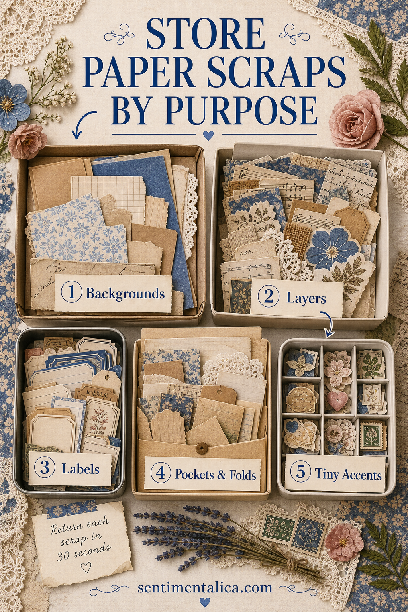
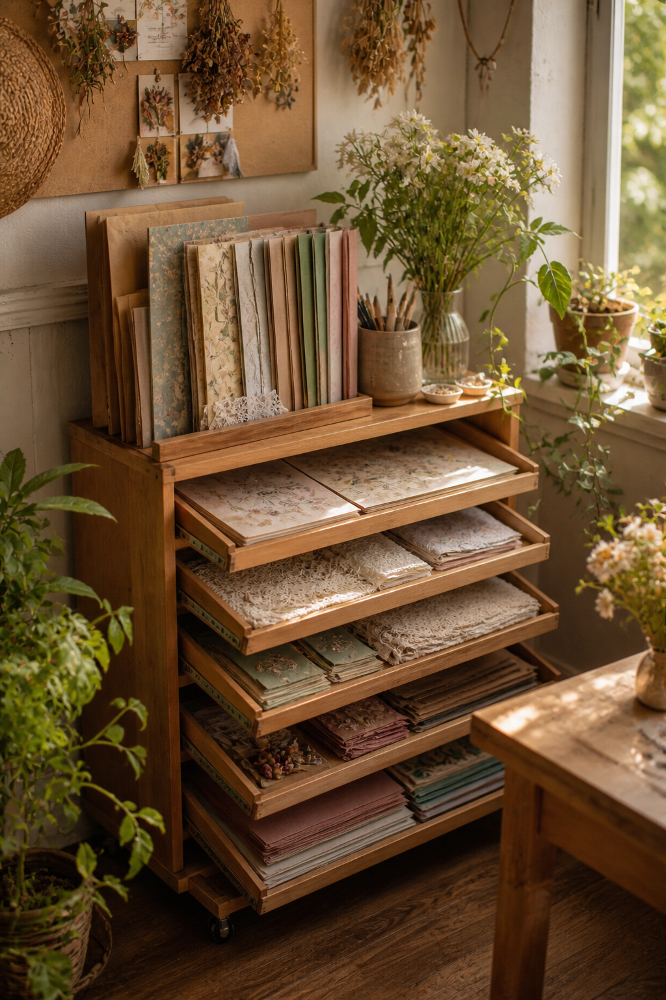

Paper-scrap storage often fails because it asks you to remember too much. A box arranged by color may look beautiful, but it does not help when you need a pocket. A drawer arranged by origin becomes confusing once packaging, book pages, and printables begin to mix.
Try sorting by the job a scrap can do. Five simple roles make it easier to find useful pieces, return leftovers, and let go of paper that has no realistic place in your work.

Box one: backgrounds
Keep pieces large enough to cover at least half a page, form a card front, or become a substantial foundation. Store them flat in a shallow tray or upright magazine file. If a sheet is too small for your usual background, move it to layers.
Limit this category to paper you genuinely like as a starting surface. A large scrap is not automatically useful.
Box two: layers
Layers include rectangles, torn strips, book-page fragments, fabric-like paper, and pieces that can sit behind a photograph or journaling card. A wide envelope or open bin keeps them visible enough to shuffle through quickly.
Do not subdivide by every color. If needed, separate light and dark so you can find contrast without maintaining a complicated system.

Box three: labels and writing pieces
Save pale scraps with enough quiet space for a word, date, caption, or short note. Include ruled fragments, ledger pieces, tags, and clean packaging. Trim only obvious damaged edges; irregular shapes can remain useful.
A transparent pouch works well because these pieces are small but need to remain visible.
Box four: pockets and folds
Put sturdy rectangles, envelope remnants, paper bags, and pieces with interesting existing folds here. Anything in this category should be large and strong enough to hold another paper item.
Store flat templates beside the box: one favorite pocket, tab, and envelope shape. You can test a scrap against them before deciding where it belongs.
Box five: tiny accents
This is the category most likely to overflow. Keep narrow borders, tabs, punched shapes, postage-size pictures, and beautiful fragments. Use a small container with a firm limit. When it is full, make a cluster sheet or discard the least useful pieces.
The thirty-second return rule
Every category should be reachable, open easily, and accept a scrap without extra folding or labelling. If returning one piece takes longer than thirty seconds, the system is too precise for an active craft desk.
- Place the five containers within one shelf or cart.
- Label them with the job, not the material source.
- Keep a small “decide later” tray during projects.
- Empty that tray when the session ends.
- Review the tiny-accents box once a month.
Good storage should help you begin a page, not become another craft project to maintain.
Test the system for two weeks before buying containers. Shoebox lids, envelopes, reused trays, and shallow boxes are enough to learn which sizes your own scraps need.
Browse more practical ways to make a calmer journal desk in the Sentimentalica journal.